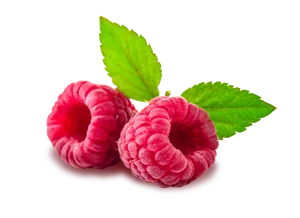
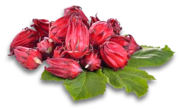
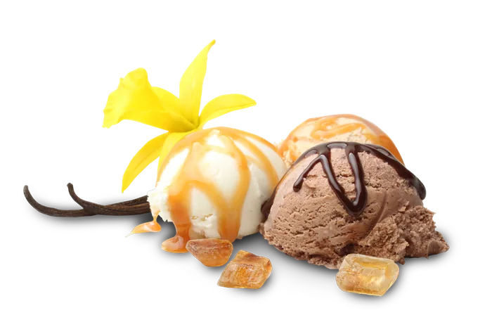
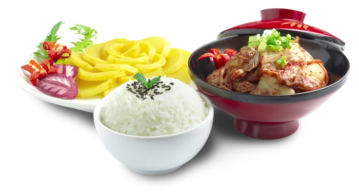
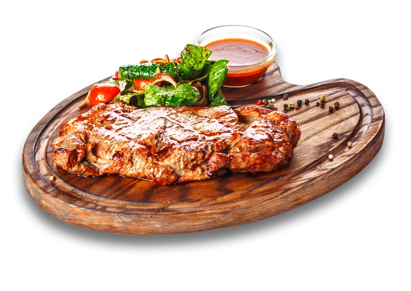
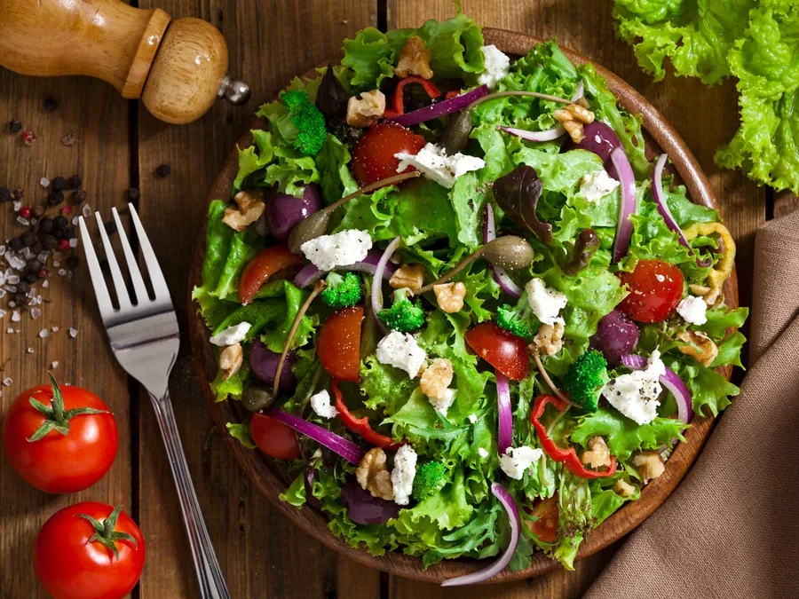

Ideas para sacarle todo el sabor a nuestros productos: de la repostería al asador. Síguenos en Instagram @sabemosdecocina para más inspiración.

Nuestra vainilla convierte helados, flanes, pasteles y galletas en experiencias inolvidables. Una cucharadita basta para llenar tu cocina de aroma.

Arroz frito, ramen casero, pollo teriyaki o unas alitas orientales: nuestra soya es la base del sabor. Y si te gusta el picor, la versión habanero es tu nueva favorita.

Las salsas negras PASA son el secreto de los parrilleros: profundidad, color y ese sabor que hace que todos pregunten "¿qué le pusiste?".

Mango, frambuesa-jamaica, césar a la parmesana o vinagreta de finas hierbas: nuestros aderezos gourmet convierten cualquier ensalada en el plato estrella.
Síguenos en Instagram y descubre nuevas formas de darle sabor a tu cocina.
Seguir @sabemosdecocina